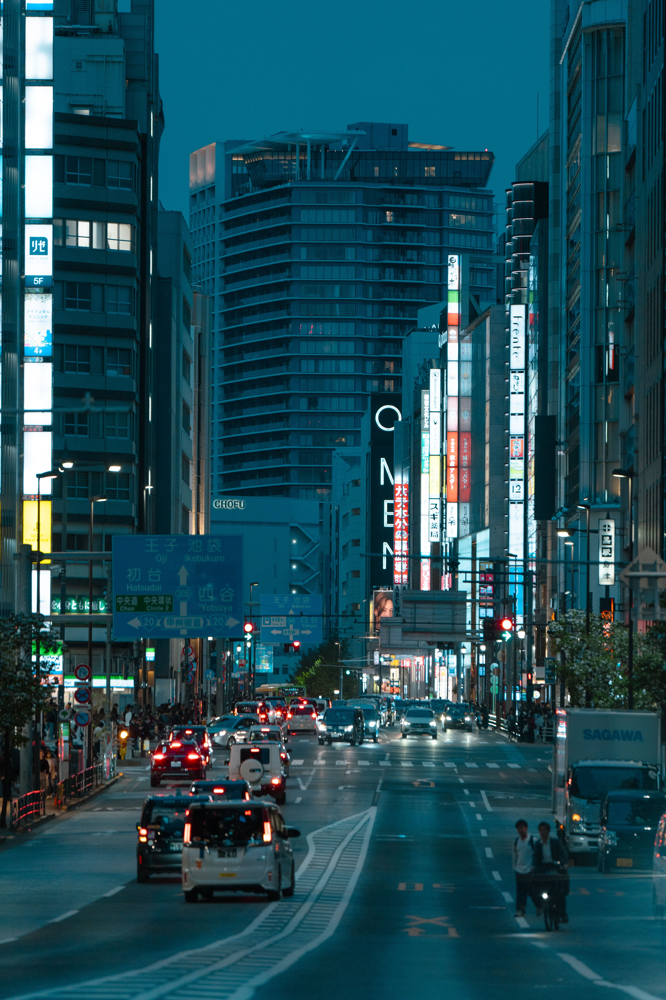
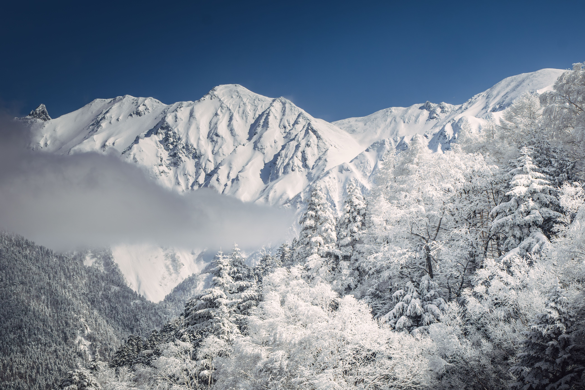
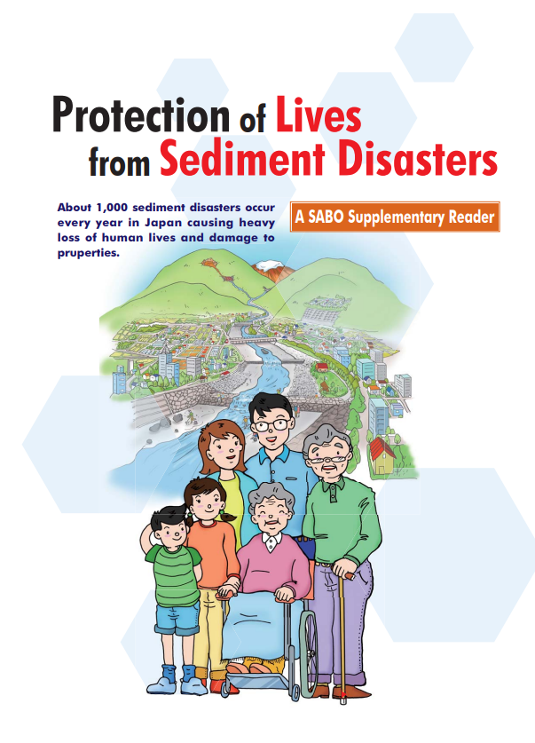
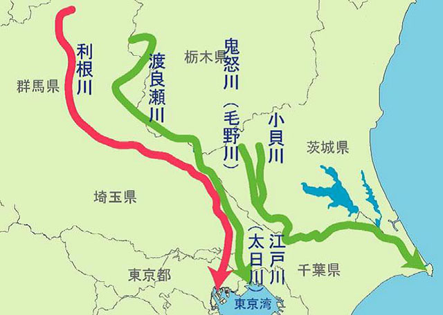
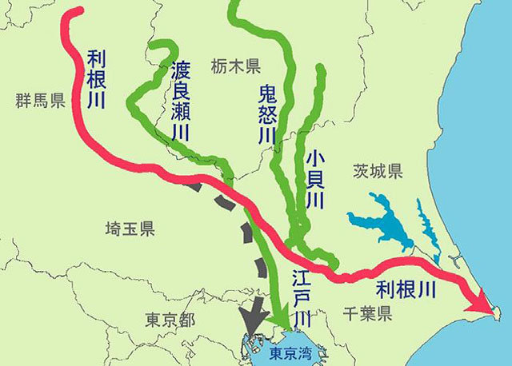
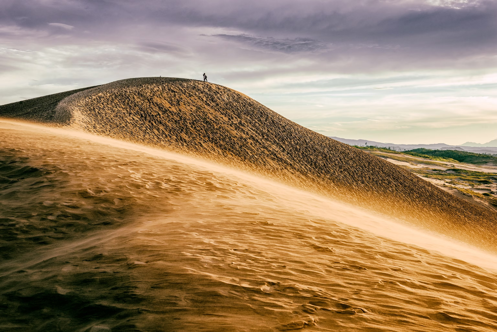
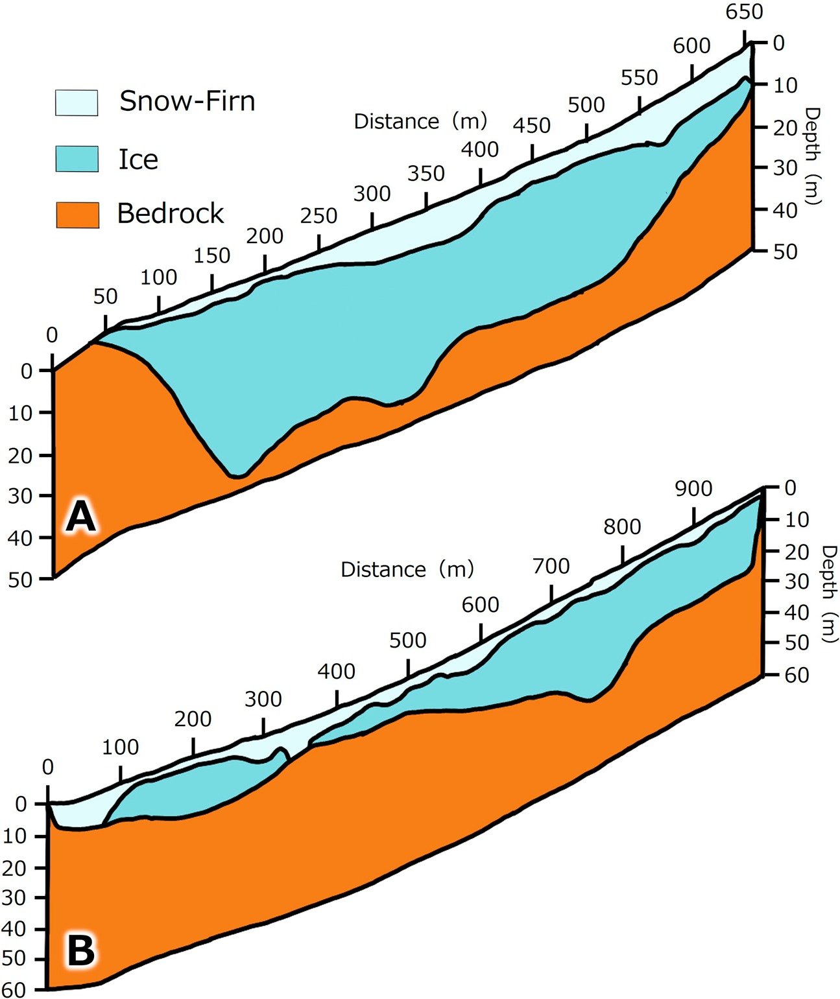

Japan is a very "wet" country, as many island masses tend to be. However, Japan is not all tropics. From beautiful mountain landscapes with snow-capped peaks to beautiful sandy beaches, Japan is constantly changing. This is due both to its inhabitants and to its high concentration of tectonic energy that sculpts and shapes the Japan we know today and the Japan of tomorrow.
Snow-Capped Mountains in Takayama, Japan

Note. From Snow-Capped Mountains in Takayama, Japan [Photograph], by [R. Abel], [2025], Pexels (https://www.pexels.com/photo/snow-capped-mountains-in-takayama-japan-31246085/).
Japan is known for high seismic activity; this can lead to a variety of rapid weathering and sediment disasters. Among the disasters are volcanic disasters, river closures, avalanche disasters, debris flow disasters, slope failure disasters, and landslide disasters, which are discussed in the "Protection of Lives from Sediment Disasters" reader published by the NPO Sediment Disaster Prevention Publicity Center (SPC) (2016). (You can view the PDF here.)
cover illustration from Protection of Lives From Sediment Disasters: A SABO Supplementary Reader

Note. cover illustration from Protection of Lives From Sediment Disasters: A SABO Supplementary Reader (p. 1) by NPO Sediment Disaster Prevention Publicity Center, January 2016 (https://www.sabopc.or.jp/images/english.pdf).
"On June 29, 1999, a severe sediment-related disaster occurred in Hiroshima City and its vicinity (Hiroshima Prefecture). 325 debris flows and steep slope failures occurred almost simultaneously, 24 people were killed, and more than 150 houses were destroyed or damaged in newly developed residential areas on hillsides and foothills" (Kunitomo, 2003). This disaster sent the Government into a disaster-prevention frenzy, enacting a new act called "The Sediment-related Disaster Prevention Act," which set guidelines for identifying hazard areas and developing early warning systems for them.
Today, Japan still faces many of these sediment disasters. However, due to the swift development of measures to prevent and prepare for these disasters, deaths from them have significantly decreased.
The rivers in Japan have been prone to flooding since ancient times; its famous summer monsoons do not provide much help, but its people have learned to protect against, control, and utilize flooding. Historical rivers like the Kamanashi River, Kiso River, Yodo River, Ara River, and Shirakawa, Kikuchi, and Midori were all modified, altered, or added to in hopes of subduing flooding, either by relocating channels, constructing levees, or installing basins, all in hopes of redirecting the water flows and creating safe land where the village people could live.
The largest historical river alteration began during the Edo period (17th - 19th centuries), when Ieyasu Tokugawa, the first shogun, began efforts to protect the area now known as Tokyo by diverting the Tone River. This project was known as 'Tonegawa Tōsen' or the Tone River Eastward Diversion Project. The Ministry of Land, Infrastructure, Transport, and Tourism [MLIT] (2007a) reported on Ieyasu Tokugawa's efforts, saying that,
"Until it was diverted, the Tone River had flowed into Tokyo bay via the channels of what are now the Ara River and the Edo River. In 1621 Ieyasu began the excavation of a diversion channel which led the Tone River to the Watarase River. At this stage the Tone River still flowed into Tokyo Bay via the Edo River. Then, another diversion work was carried out to divert the Tone River to the Kinu River, through which the Tone River finally pours into the Pacific Ocean."
This effort transformed the Tokyo area into one where the modern-day behemoth of a city now sits. Before this transformation, "the Tone River, Watarase River, and Kinugawa River (Kenogawa River) existed as separate rivers" (MLIT, n.d.-b); the Tone River has only undergone more modifications since, in response to disasters like the eruption of Mount Asama, the Great Flood of 1910, and Typhoon Kathleen. This has resulted in a highly engineered river course, negating natural meandering; however, riverbed scouring and downstream coastal erosion still pose a threat. This erosion deepens the riverbed and lowers water levels, making pumping stations necessary for higher riverbeds; however, this requires constant maintenance and surveillance.
Course of the Tone River Prior to (Before 1590) and Following Eastward Diversion


Note. From 日本の川 - 関東 - 利根川: 利根川の歴史 [Rivers of Japan - Kanto - Tone River: History of the Tone River] [Map], by Ministry of Land, Infrastructure, Transport and Tourism, n.d. (https://www.mlit.go.jp/river/toukei_chousa/kasen/jiten/nihon_kawa/0316_tonegawa/0316_tonegawa_01.html).
Originating from Mount Ōminakami, the Tone River currently measures 322 km in length. Fed by almost 800 tributaries, it provides about 80% of the water for Tokyo and its surrounding prefectures. "Mt. Tanigawadake is part of the Echigo Mountain Range, which stretches from Gunma Prefecture to Fukushima Prefecture" (para. 2). These mountains make up the range that, when large amounts of precipitation and snow fall on the southeast side, act as a funnel, catching water in an area about 16,840 square kilometers in size. (MLIT, n.d.-a) The annual mean discharge of the Tone River as of 1995 is about 190 cubic meters per second, with a maximum of 12,07 cubic meters per second and a minimum of 68 cubic meters per second. (MLIT, 2007b)
Japan experiences a strong northwest seasonal wind in winter; because of this and other factors listed below, Japan has its own dunes! However, Japan's fierce winter winds can be quite detrimental to an island, removing what little valuable land it may have. Due to this, the Japanese Government, through its Ministry of Agriculture and Forestry Agency (Rinya-chō), reportedly plants forests to help prevent erosion, high wind speeds, landslides, and floods, and to support water management that helps balance Japan's environment. The forestry agency website lists a few of these projects, with number five titled "windproof safety forest," the effects and benefits of which read as follows: "The canopy forms a barrier, distributing wind power across the branches, leaves, and trunk, weakening that energy and mitigating wind speed, preventing wind damage" (Forestry Agency, n.d.).
Sea Winds Sweeping Over the Tottori Sand Dunes, Japan

Note. From See Japan's Surprising Sand Dunes," by A. E. Petri, April 27, 2017, National Geographic (https://www.nationalgeographic.com/travel/article/tottori-sand-dunes-desert). Photograph by Sean Pavone, Alamy Stock Photo.
Surprising to even me, Japan has dunes! Formerly known as the Tottori Sand Dunes and located along the coast of the Tottori Prefecture, Japan's dunes are not actually desert sand; the dunes are river sediment, not aeolian sand swept in from a true desert. Japan has no natural desert climate" (tottorisanddunes.com, 2026). The sole reason Japan has dunes is due to the granite mountains of the Chugoku range, winds, and time. However, these dunes are not growing in size; rather, they're shrinking due to urbanization. Due to the growing population and the increasing number of environmentally changing infrastructure projects, conservation efforts have only grown. This particular mission has been ongoing since the 1990s to preserve the majesty of this effect.
When most think of glaciers, the typical image of an iceberg in water might come to mind, and you are not wrong, but the definition of "glacier" is actually quite up in the air! Japan is a mountainous region due to the constant shift of its four surrounding tectonic plates. When it comes to snowy mountains, Japan has quite a lot of options ranging from those in Hokkaido (the northernmost island), like Mount Kurodake (1,984 m), Aashi-dake (2,291 m), Tomuraushi (2,141 m), and Tokachi (2,077 m ); to Mount Gassan (1,984 m) in northern Honshu, to the well-known Hida Mountain range home to Mount Tate (3,015 m). Although if this were a competition for height, the famous Mount Fuji towers above the rest, standing at an elevation of 3,776 meters. Unfortunately, despite the majesty of these peaks, "the equilibrium line altitude (snow line) in Japan is 4000 meters, which is nearly one thousand meters higher than the Japanese highest mountain range" (Hoshiai and Kobayashi, 1957 as cited in Yoshida, 2023). So there should not be glaciers, but some glaciologists and researchers, such as Kotaro Fukui and Hajime Iida in 2012, have reported what are known as "snow patch glaciers".
Graphic of Snow Patch Glaciers

Note. Showing glacier structures from Arie et al. (2025), published in Frontiers in Earth Science, 13, Article 1442884 (https://www.frontiersin.org/journals/earth-science/articles/10.3389/feart.2025.1442884/full) under CC BY 4.0.
According to Yoshida (2023), "There is so far no definition or criteria of recognition of glaciers officially decided by international as well as Japanese academic societies of related sciences." A glacier is characterized by a large body of ice that either flows or simply does not. Snow patch glaciers are similar to a simple patch of snow; however, their size and density resemble those of a glacier.